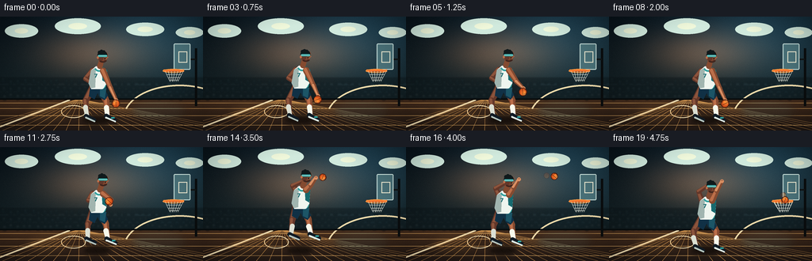
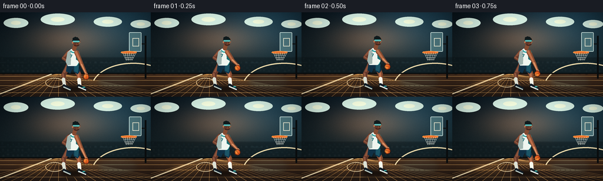

CODING AGENTS AS PIXEL WORLD MODELS
traex/DeepSeek-V4.1-Flash · instance_preservation_0034
点击播放 · 原生 RGB 像素
逐轮保存的候选
回放视频、检查图与代码变化。
每份候选均可单独播放。实际图片检查记录在下方工具轨迹中。
候选 01播放与检查图
点击播放 · 原生 RGB 像素


展开代码变化
--- 上一保存版本
+++ 本次保存版本
@@ -0,0 +1,588 @@
+from pathlib import Path
+import json
+import math
+
+import numpy as np
+from PIL import Image, ImageDraw, ImageFilter, ImageFont
+
+import artifact_io
+
+
+ROOT = Path(__file__).resolve().parent
+SPEC = json.loads((ROOT / "task_spec.json").read_text())
+W, H = SPEC["width"], SPEC["height"]
+N, FPS = SPEC["frames"], SPEC["fps"]
+S = 4
+CW, CH = W * S, H * S
+
+
+def rgb(value, alpha=255):
+ value = value.lstrip("#")
+ return tuple(int(value[i:i + 2], 16) for i in (0, 2, 4)) + (alpha,)
+
+
+def mix(a, b, t):
+ return tuple(round(a[i] * (1.0 - t) + b[i] * t) for i in range(4))
+
+
+def pxy(point):
+ return (point[0] * S, point[1] * S)
+
+
+def capsule(draw, p1, p2, r1, r2, fill):
+ x1, y1 = pxy(p1)
+ x2, y2 = pxy(p2)
+ dx, dy = x2 - x1, y2 - y1
+ length = max(0.001, math.hypot(dx, dy))
+ nx, ny = -dy / length, dx / length
+ a1, a2 = r1 * S, r2 * S
+ polygon = [
+ (x1 + nx * a1, y1 + ny * a1),
+ (x2 + nx * a2, y2 + ny * a2),
+ (x2 - nx * a2, y2 - ny * a2),
+ (x1 - nx * a1, y1 - ny * a1),
+ ]
+ draw.polygon(polygon, fill=fill)
+ draw.ellipse((x1 - a1, y1 - a1, x1 + a1, y1 + a1), fill=fill)
+ draw.ellipse((x2 - a2, y2 - a2, x2 + a2, y2 + a2), fill=fill)
+
+
+def limb(draw, p1, p2, r1, r2, base, highlight):
+ capsule(draw, p1, p2, r1, r2, base)
+ offset = (-0.9, -0.9)
+ h1 = (p1[0] + offset[0], p1[1] + offset[1])
+ h2 = (p2[0] + offset[0], p2[1] + offset[1])
+ capsule(draw, h1, h2, r1 * 0.48, r2 * 0.42, highlight)
+
+
+def make_background():
+ yy, xx = np.mgrid[0:CH, 0:CW]
+ xn = xx / max(1, CW - 1)
+ yn = yy / max(1, CH - 1)
+
+ top = np.array([8, 18, 25], dtype=np.float32)
+ bottom = np.array([24, 37, 39], dtype=np.float32)
+ image = top[None, None, :] * (1.0 - yn[..., None]) + bottom[None, None, :] * yn[..., None]
+
+ radial = np.sqrt(((xn - 0.47) * 1.02) ** 2 + ((yn - 0.32) * 1.35) ** 2)
+ glow = np.exp(-(radial / 0.27) ** 2)
+ image += glow[..., None] * np.array([72, 41, 22], dtype=np.float32)
+
+ cool_glow = np.exp(-(((xn - 0.78) * 2.4) ** 2 + ((yn - 0.12) * 2.1) ** 2))
+ image += cool_glow[..., None] * np.array([18, 39, 48], dtype=np.float32)
+
+ floor_mask = yy >= 104 * S
+ floor_t = np.clip((yn - 104 / H) / (1.0 - 104 / H), 0.0, 1.0)
+ floor = (
+ np.array([67, 43, 27], dtype=np.float32)[None, None, :] * (1.0 - floor_t[..., None])
+ + np.array([31, 23, 19], dtype=np.float32)[None, None, :] * floor_t[..., None]
+ )
+ image = np.where(floor_mask[..., None], floor, image)
+
+ rng = np.random.default_rng(91)
+ grain = rng.normal(0.0, 2.1, (CH, CW, 1))
+ image = np.clip(image + grain, 0, 255).astype(np.uint8)
+ base = Image.fromarray(image, "RGB").convert("RGBA")
+ draw = ImageDraw.Draw(base, "RGBA")
+
+ # Arena ceiling lights.
+ for x, y, width, height in [(27, 18, 42, 17), (98, 12, 58, 20), (183, 16, 48, 17), (239, 20, 35, 14)]:
+ draw.ellipse(
+ ((x - width / 2) * S, (y - height / 2) * S, (x + width / 2) * S, (y + height / 2) * S),
+ fill=(201, 225, 213, 20),
+ )
+ draw.ellipse(
+ ((x - width / 5) * S, (y - height / 5) * S, (x + width / 5) * S, (y + height / 5) * S),
+ fill=(230, 238, 210, 105),
+ )
+
+ # Sparse, low-contrast crowd behind the court.
+ crowd = Image.new("RGBA", (CW, CH), (0, 0, 0, 0))
+ cdraw = ImageDraw.Draw(crowd)
+ rng = np.random.default_rng(14)
+ for row, y in enumerate((81, 91, 100)):
+ cdraw.rectangle((0, (y - 4) * S, CW, (y + 3) * S), fill=(7, 15, 18, 95))
+ for x in np.arange(-3, W + 8, 8.5):
+ jx = x + rng.normal(0, 1.1)
+ jy = y + rng.normal(0, 0.8)
+ radius = 1.45 + 0.18 * row
+ cdraw.ellipse(
+ ((jx - radius) * S, (jy - radius) * S, (jx + radius) * S, (jy + radius) * S),
+ fill=(20 + row * 4, 32 + row * 3, 35 + row * 3, 165),
+ )
+ cdraw.rounded_rectangle(
+ ((jx - 2.5) * S, (jy + 1.0) * S, (jx + 2.5) * S, (jy + 5.0) * S),
+ radius=2 * S,
+ fill=(13, 24, 28, 145),
+ )
+ crowd = crowd.filter(ImageFilter.GaussianBlur(0.75 * S))
+ base.alpha_composite(crowd)
+
+ # Court floor perspective and markings.
+ for x_bottom in range(-45, 315, 16):
+ draw.line(
+ (100 * S, 104 * S, x_bottom * S, H * S),
+ fill=(202, 144, 77, 20),
+ width=max(1, S // 2),
+ )
+ for y in (109, 116, 125, 137):
+ draw.line((0, y * S, CW, y * S), fill=(231, 177, 102, 18), width=max(1, S // 2))
+
+ draw.arc(
+ (155 * S, 86 * S, 298 * S, 171 * S),
+ start=197,
+ end=344,
+ fill=(232, 211, 164, 120),
+ width=2 * S,
+ )
+ draw.line((0, 139 * S, 88 * S, 105 * S), fill=(235, 216, 173, 62), width=2 * S)
+ draw.ellipse((77 * S, 112 * S, 108 * S, 128 * S), outline=(235, 216, 173, 48), width=S)
+
+ # Soft reflected pools from the arena lights.
+ reflection = Image.new("RGBA", (CW, CH), (0, 0, 0, 0))
+ rdraw = ImageDraw.Draw(reflection)
+ rdraw.ellipse((30 * S, 108 * S, 90 * S, 137 * S), fill=(235, 169, 85, 18))
+ rdraw.ellipse((164 * S, 104 * S, 236 * S, 133 * S), fill=(100, 171, 178, 14))
+ reflection = reflection.filter(ImageFilter.GaussianBlur(5 * S))
+ base.alpha_composite(reflection)
+
+ draw.line((0, 104 * S, CW, 104 * S), fill=(9, 13, 14, 210), width=2 * S)
+ return base
+
+
+def draw_hoop(image, frame_index):
+ draw = ImageDraw.Draw(image, "RGBA")
+ draw.line((247 * S, 40 * S, 247 * S, 113 * S), fill=(10, 13, 14, 220), width=3 * S)
+ draw.line((247 * S, 54 * S, 237 * S, 54 * S), fill=(16, 20, 21, 220), width=2 * S)
+ draw.rounded_rectangle(
+ (219 * S, 34 * S, 240 * S, 67 * S),
+ radius=1.5 * S,
+ fill=(71, 109, 116, 76),
+ outline=(207, 229, 223, 190),
+ width=max(1, S),
+ )
+ draw.rectangle(
+ (225 * S, 44 * S, 236 * S, 58 * S),
+ outline=(238, 232, 207, 155),
+ width=max(1, S),
+ )
+ draw.line((206 * S, 68 * S, 232 * S, 68 * S), fill=(236, 111, 43, 255), width=3 * S)
+ draw.ellipse((205 * S, 66 * S, 232 * S, 71 * S), outline=(249, 151, 65, 255), width=S)
+
+ sway = 0.0
+ if frame_index >= 18:
+ sway = 1.8 * math.sin((frame_index - 18) * math.pi * 0.75)
+ tops = [208, 212, 216, 220, 224, 228, 231]
+ bottoms = [214, 215, 217, 218, 220, 222, 224]
+ net_color = (230, 232, 219, 155)
+ for top, bottom in zip(tops, bottoms):
+ draw.line(
+ (top * S, 69 * S, (bottom + sway) * S, 82 * S),
+ fill=net_color,
+ width=max(1, S // 2),
+ )
+ for y, x0, x1 in ((73, 210, 229), (77, 212, 227), (80, 214, 225)):
+ draw.line(
+ ((x0 + sway * 0.4) * S, y * S, (x1 + sway * 0.6) * S, y * S),
+ fill=(220, 224, 214, 92),
+ width=max(1, S // 2),
+ )
+
+
+def ball_tile(radius, angle, opacity=255):
+ size = int(math.ceil((radius * 2 + 4) * S))
+ tile = Image.new("RGBA", (size, size), (0, 0, 0, 0))
+ yy, xx = np.mgrid[0:size, 0:size]
+ cx = (size - 1) / 2
+ cy = (size - 1) / 2
+ nx = (xx - cx) / (radius * S)
+ ny = (yy - cy) / (radius * S)
+ dist = np.sqrt(nx * nx + ny * ny)
+ light = np.clip(1.0 - np.sqrt((nx + 0.30) ** 2 + (ny + 0.34) ** 2) / 1.5, 0.0, 1.0)
+ color = np.zeros((size, size, 4), dtype=np.uint8)
+ color[..., 0] = np.clip(179 + 82 * light, 0, 255).astype(np.uint8)
+ color[..., 1] = np.clip(53 + 94 * light, 0, 255).astype(np.uint8)
+ color[..., 2] = np.clip(17 + 39 * light, 0, 255).astype(np.uint8)
+ color[..., 3] = np.where(dist <= 1.0, opacity, 0).astype(np.uint8)
+ ball = Image.fromarray(color, "RGBA")
+ bdraw = ImageDraw.Draw(ball)
+ seam = Image.new("RGBA", (size, size), (0, 0, 0, 0))
+ sdraw = ImageDraw.Draw(seam)
+ seam_color = (74, 27, 13, min(230, opacity))
+ line_width = max(1, round(0.55 * S))
+ sdraw.arc(
+ (cx - radius * S * 0.82, cy - radius * S * 1.12, cx + radius * S * 0.82, cy + radius * S * 1.12),
+ 80,
+ 280,
+ fill=seam_color,
+ width=line_width,
+ )
+ sdraw.arc(
+ (cx - radius * S * 1.15, cy - radius * S * 0.55, cx + radius * S * 1.15, cy + radius * S * 0.55),
+ 105,
+ 255,
+ fill=seam_color,
+ width=line_width,
+ )
+ sdraw.line((cx, cy - radius * S, cx, cy + radius * S), fill=seam_color, width=line_width)
+ mask = Image.new("L", (size, size), 0)
+ mdraw = ImageDraw.Draw(mask)
+ mdraw.ellipse((cx - radius * S, cy - radius * S, cx + radius * S, cy + radius * S), fill=255)
+ ball.alpha_composite(Image.composite(seam, Image.new("RGBA", (size, size), (0, 0, 0, 0)), mask))
+ bdraw.ellipse(
+ (cx - radius * S, cy - radius * S, cx + radius * S, cy + radius * S),
+ outline=(70, 25, 12, min(235, opacity)),
+ width=max(1, round(0.8 * S)),
+ )
+ bdraw.arc(
+ (cx - radius * S * 0.64, cy - radius * S * 0.72, cx + radius * S * 0.35, cy + radius * S * 0.35),
+ 192,
+ 320,
+ fill=(255, 199, 116, min(150, opacity)),
+ width=max(1, S // 2),
+ )
+ return ball.rotate(angle, resample=Image.Resampling.BICUBIC, expand=False)
+
+
+def draw_ball(image, center, radius, angle, opacity=255):
+ tile = ball_tile(radius, angle, opacity)
+ x = int(round(center[0] * S - tile.width / 2))
+ y = int(round(center[1] * S - tile.height / 2))
+ image.alpha_composite(tile, (x, y))
+
+
+def frame_pose(frame_index):
+ if frame_index <= 8:
+ phase = 2.0 * math.pi * frame_index / 4.0
+ lift = abs(math.sin(math.pi * (frame_index + 0.35) / 4.0))
+ ball_x = 146.0 + 1.4 * math.sin(phase)
+ ball_y = 117.0 - 25.0 * lift
+ body_y = 0.9 * math.cos(phase) - 0.2
+ crouch = 0.0
+ jump = 0.0
+ tuck = 0.0
+ release = False
+ else:
+ jump = {9: 0.0, 10: 3.0, 11: 8.0, 12: 13.0, 13: 15.0, 14: 13.0,
+ 15: 10.0, 16: 7.0, 17: 4.0, 18: 1.0, 19: 0.0}[frame_index]
+ crouch = 2.2 if frame_index == 9 else (0.5 if frame_index == 19 else 0.0)
+ body_y = crouch - jump
+ tuck = min(1.0, jump / 15.0)
+ shot_ball = {
+ 9: (142.0, 86.0), 10: (139.5, 78.0), 11: (137.5, 68.5),
+ 12: (136.0, 57.5), 13: (138.0, 45.5),
+ 14: (151.0, 38.0), 15: (168.0, 34.5), 16: (187.0, 37.0),
+ 17: (204.0, 44.5), 18: (217.0, 54.5), 19: (222.0, 67.0),
+ }
+ ball_x, ball_y = shot_ball[frame_index]
+ release = frame_index >= 14
+
+ hip = (122.0 + 0.6 * tuck, 90.0 + body_y)
+ shoulder = (125.0 + 0.9 * tuck, 66.0 + body_y)
+ head = (129.5 + 1.0 * tuck, 50.5 + body_y)
+
+ hip_b = (hip[0] - 5.0, hip[1] - 0.5)
+ knee_b = (108.0 - 2.5 * crouch + 5.5 * tuck, 106.0 + body_y * 0.82 - 4.0 * tuck)
+ ankle_b = (110.0 + 1.0 * tuck, 125.0 + body_y - 2.0 * tuck)
+ toe_b = (118.0 + 2.0 * tuck, 130.0 + body_y - 2.0 * tuck)
+
+ hip_f = (hip[0] + 4.0, hip[1] - 0.5)
+ knee_f = (134.0 + 2.5 * crouch - 1.0 * tuck, 106.0 + body_y * 0.82 - 4.0 * tuck)
+ ankle_f = (135.5 + 1.0 * tuck, 125.0 + body_y - 2.0 * tuck)
+ toe_f = (144.0 + 2.0 * tuck, 130.0 + body_y - 2.0 * tuck)
+
+ if frame_index <= 8:
+ right_shoulder = (130.0, 68.0 + body_y)
+ right_wrist = (ball_x + 0.8, ball_y - 4.4)
+ right_elbow = (139.5, (right_shoulder[1] + right_wrist[1]) * 0.5 + 3.0)
+ left_shoulder = (117.0, 67.5 + body_y)
+ left_elbow = (107.8, 78.0 + body_y)
+ left_wrist = (115.2, 83.5 + body_y)
+ elif not release:
+ right_shoulder = (130.0, 67.0 + body_y)
+ right_wrist = (ball_x + 2.0, ball_y + 4.2)
+ right_elbow = (140.0, (right_shoulder[1] + right_wrist[1]) * 0.5 + 1.0)
+ left_shoulder = (117.0, 67.0 + body_y)
+ left_wrist = (ball_x - 4.2, ball_y + 3.0)
+ left_elbow = (111.5, (left_shoulder[1] + left_wrist[1]) * 0.5 + 2.0)
+ else:
+ right_shoulder = (130.0, 67.0 + body_y)
+ right_elbow = (136.0, 55.0 + body_y * 0.55)
+ right_wrist = (142.5, 43.0 + body_y * 0.32)
+ left_shoulder = (117.0, 67.0 + body_y)
+ left_elbow = (113.0, 56.0 + body_y * 0.55)
+ left_wrist = (126.5, 47.0 + body_y * 0.32)
+
+ return {
+ "ball": (ball_x, ball_y),
+ "body_y": body_y,
+ "tuck": tuck,
+ "hip": hip,
+ "shoulder": shoulder,
+ "head": head,
+ "back_leg": (hip_b, knee_b, ankle_b, toe_b),
+ "front_leg": (hip_f, knee_f, ankle_f, toe_f),
+ "back_arm": (left_shoulder, left_elbow, left_wrist),
+ "front_arm": (right_shoulder, right_elbow, right_wrist),
+ }
+
+
+def draw_player(image, frame_index):
+ pose = frame_pose(frame_index)
+ draw = ImageDraw.Draw(image, "RGBA")
+
+ skin_back = rgb("#5f3528")
+ skin_back_hi = rgb("#87513a")
+ skin = rgb("#80482f")
+ skin_hi = rgb("#b56b47")
+ skin_light = rgb("#d28a5f")
+ jersey = rgb("#e6ece6")
+ jersey_hi = rgb("#fbfcf3")
+ jersey_shadow = rgb("#9baea9")
+ teal = rgb("#2d9b99")
+ teal_dark = rgb("#16666b")
+ shorts = rgb("#102f43")
+ shorts_hi = rgb("#1b5263")
+ shoe = rgb("#101a23")
+ shoe_hi = rgb("#d7e3dc")
+
+ hip_b, knee_b, ankle_b, toe_b = pose["back_leg"]
+ hip_f, knee_f, ankle_f, toe_f = pose["front_leg"]
+
+ # Back leg, drawn cool and slightly darker for depth.
+ limb(draw, hip_b, knee_b, 4.8, 3.9, skin_back, skin_back_hi)
+ limb(draw, knee_b, ankle_b, 3.4, 2.7, skin_back, skin_back_hi)
+ capsule(draw, (knee_b[0] - 0.2, knee_b[1] + 8.0), (ankle_b[0], ankle_b[1] + 0.6), 3.0, 2.5, rgb("#d4d8cc"))
+ capsule(draw, (ankle_b[0] - 1.5, ankle_b[1]), (toe_b[0] + 1.0, toe_b[1]), 2.7, 2.0, shoe)
+ capsule(draw, (ankle_b[0] - 1.6, ankle_b[1] + 1.9), (toe_b[0] + 1.3, toe_b[1] + 1.8), 1.0, 0.9, rgb("#aebdb7"))
+
+ # Front leg and shoe.
+ limb(draw, hip_f, knee_f, 5.1, 4.0, skin, skin_hi)
+ limb(draw, knee_f, ankle_f, 3.7, 2.8, skin, skin_hi)
+ capsule(draw, (knee_f[0] + 0.2, knee_f[1] + 8.5), (ankle_f[0], ankle_f[1] + 0.5), 3.2, 2.6, rgb("#eef0e3"))
+ capsule(draw, (ankle_f[0] - 1.6, ankle_f[1]), (toe_f[0] + 1.0, toe_f[1]), 2.9, 2.1, shoe)
+ capsule(draw, (ankle_f[0] - 1.8, ankle_f[1] + 2.0), (toe_f[0] + 1.2, toe_f[1] + 1.9), 1.1, 0.9, shoe_hi)
+ capsule(draw, (toe_f[0] - 3.0, toe_f[1] - 2.6), (toe_f[0] - 0.3, toe_f[1] - 2.8), 1.0, 0.8, teal)
+
+ # Back arm and hand.
+ ls, le, lw = pose["back_arm"]
+ limb(draw, ls, le, 3.7, 2.9, skin_back, skin_back_hi)
+ limb(draw, le, lw, 2.8, 2.1, skin_back, skin_back_hi)
+ draw.ellipse(
+ ((lw[0] - 2.0) * S, (lw[1] - 2.0) * S, (lw[0] + 2.0) * S, (lw[1] + 2.0) * S),
+ fill=skin_back,
+ )
+
+ # Shorts silhouette and jersey torso.
+ shorts_poly = [
+ (114.0, 87.0 + pose["body_y"]), (130.0, 87.0 + pose["body_y"]),
+ (136.0, 99.0 + pose["body_y"]), (132.0, 105.0 + pose["body_y"]),
+ (126.0, 102.0 + pose["body_y"]), (123.0, 96.0 + pose["body_y"]),
+ (119.0, 104.0 + pose["body_y"]), (112.0, 100.0 + pose["body_y"]),
+ ]
+ draw.polygon([pxy(p) for p in shorts_poly], fill=shorts)
+ draw.line(
+ ((114.0 * S), (88.0 + pose["body_y"]) * S, (130.5 * S), (88.0 + pose["body_y"]) * S),
+ fill=teal,
+ width=2 * S,
+ )
+ draw.polygon(
+ [pxy(p) for p in [(126, 89 + pose["body_y"]), (134, 90 + pose["body_y"]),
+ (132, 103 + pose["body_y"]), (126, 100 + pose["body_y"])]],
+ fill=shorts_hi,
+ )
+
+ torso = [
+ (114.5, 67.5 + pose["body_y"]), (121.0, 62.0 + pose["body_y"]),
+ (128.5, 62.3 + pose["body_y"]), (135.0, 67.0 + pose["body_y"]),
+ (134.0, 84.5 + pose["body_y"]), (130.0, 91.0 + pose["body_y"]),
+ (115.0, 91.0 + pose["body_y"]), (111.5, 84.0 + pose["body_y"]),
+ ]
+ draw.polygon([pxy(p) for p in torso], fill=jersey)
+ draw.polygon(
+ [pxy(p) for p in [(114.5, 67.5 + pose["body_y"]), (120.5, 64.0 + pose["body_y"]),
+ (120.0, 88.8 + pose["body_y"]), (115.0, 90.0 + pose["body_y"]),
+ (111.5, 84.0 + pose["body_y"])]],
+ fill=jersey_shadow,
+ )
+ draw.polygon(
+ [pxy(p) for p in [(128.5, 62.3 + pose["body_y"]), (135.0, 67.0 + pose["body_y"]),
+ (134.0, 83.0 + pose["body_y"]), (129.0, 80.0 + pose["body_y"])]],
+ fill=teal_dark,
+ )
+ draw.polygon(
+ [pxy(p) for p in [(130.0, 91.0 + pose["body_y"]), (134.0, 84.5 + pose["body_y"]),
+ (132.8, 89.0 + pose["body_y"]), (129.0, 91.0 + pose["body_y"])]],
+ fill=teal,
+ )
+ draw.arc(
+ (119 * S, (59 + pose["body_y"]) * S, 131 * S, (69 + pose["body_y"]) * S),
+ start=15,
+ end=165,
+ fill=teal,
+ width=2 * S,
+ )
+
+ try:
+ font = ImageFont.truetype("DejaVuSans-Bold.ttf", int(7.2 * S))
+ except OSError:
+ font = ImageFont.load_default()
+ draw.text(
+ (121.0 * S, (74.0 + pose["body_y"]) * S),
+ "7",
+ font=font,
+ fill=teal_dark,
+ anchor="mm",
+ )
+
+ # Neck, head, hair and small facial profile.
+ neck_top = (128.0 + 0.8 * pose["tuck"], 55.0 + pose["body_y"])
+ capsule(draw, (126.0, 62.0 + pose["body_y"]), neck_top, 3.4, 3.1, skin)
+ hx, hy = pose["head"]
+ draw.ellipse(((hx - 6.4) * S, (hy - 7.4) * S, (hx + 5.6) * S, (hy + 7.0) * S), fill=skin)
+ draw.ellipse(((hx - 6.0) * S, (hy - 5.8) * S, (hx + 1.2) * S, (hy + 5.4) * S), fill=skin_back)
+ draw.polygon(
+ [pxy(p) for p in [(hx + 3.8, hy - 1.4), (hx + 7.0, hy + 0.1),
+ (hx + 4.3, hy + 2.3), (hx + 2.8, hy + 3.0)]],
+ fill=skin_hi,
+ )
+ draw.ellipse(((hx + 1.4) * S, (hy - 6.4) * S, (hx + 6.3) * S, (hy + 1.7) * S), fill=skin)
+ draw.pieslice(
+ ((hx - 6.7) * S, (hy - 8.2) * S, (hx + 5.9) * S, (hy + 3.8) * S),
+ start=178,
+ end=365,
+ fill=rgb("#111a1c"),
+ )
+ for ox, oy, r in [(-4.0, -6.0, 2.1), (-1.5, -7.0, 2.3), (1.4, -6.5, 2.0), (3.6, -4.8, 1.6)]:
+ draw.ellipse(
+ ((hx + ox - r) * S, (hy + oy - r) * S, (hx + ox + r) * S, (hy + oy + r) * S),
+ fill=rgb("#10191b"),
+ )
+ draw.rounded_rectangle(
+ ((hx - 6.1) * S, (hy - 3.0) * S, (hx + 5.5) * S, (hy - 0.2) * S),
+ radius=1.2 * S,
+ fill=teal,
+ )
+ draw.line(
+ ((hx - 5.8) * S, (hy - 1.7) * S, (hx + 5.3) * S, (hy - 1.7) * S),
+ fill=rgb("#d9eee5"),
+ width=max(1, S // 2),
+ )
+ draw.ellipse(((hx + 2.0) * S, (hy + 1.1) * S, (hx + 3.7) * S, (hy + 2.6) * S), fill=rgb("#171717"))
+ draw.arc(
+ ((hx - 4.8) * S, (hy + 0.4) * S, (hx + 5.4) * S, (hy + 6.8) * S),
+ start=12,
+ end=148,
+ fill=rgb("#3e241d"),
+ width=2 * S,
+ )
+ draw.line(
+ ((hx + 1.0) * S, (hy + 4.0) * S, (hx + 3.8) * S, (hy + 4.0) * S),
+ fill=rgb("#40231d"),
+ width=max(1, S // 2),
+ )
+ draw.ellipse(
+ ((hx - 7.3) * S, (hy - 0.8) * S, (hx - 4.8) * S, (hy + 2.2) * S),
+ fill=skin_hi,
+ )
+
+ # Shooting arm, in front of the jersey.
+ rs, re, rw = pose["front_arm"]
+ limb(draw, rs, re, 4.0, 3.0, skin, skin_hi)
+ limb(draw, re, rw, 2.9, 2.0, skin, skin_light)
+ draw.ellipse(
+ ((rw[0] - 2.3) * S, (rw[1] - 2.3) * S, (rw[0] + 2.3) * S, (rw[1] + 2.3) * S),
+ fill=skin_light,
+ )
+ draw.line(
+ ((rw[0] - 1.2) * S, (rw[1] - 1.0) * S, (rw[0] + 1.2) * S, (rw[1] - 1.0) * S),
+ fill=rgb("#6c392a"),
+ width=max(1, S // 2),
+ )
+ return pose
+
+
+def add_shadows(image, pose, frame_index):
+ shadow = Image.new("RGBA", (CW, CH), (0, 0, 0, 0))
+ draw = ImageDraw.Draw(shadow, "RGBA")
+ body_y = pose["body_y"]
+ jump = max(0.0, -body_y)
+ width = max(27.0, 38.0 - jump * 0.5)
+ draw.ellipse(
+ ((122 - width / 2) * S, 126 * S, (122 + width / 2) * S, 135 * S),
+ fill=(0, 0, 0, 118),
+ )
+ bx, by = pose["ball"]
+ if frame_index <= 8:
+ height = max(0.0, 130.0 - by)
+ sw = max(3.0, 10.0 - height * 0.25)
+ draw.ellipse(((bx - sw / 2) * S, 129 * S, (bx + sw / 2) * S, 132.5 * S), fill=(0, 0, 0, 88))
+ shadow = shadow.filter(ImageFilter.GaussianBlur(2.2 * S))
+ image.alpha_composite(shadow)
+
+
+def add_finish(image, frame_index):
+ arr = np.asarray(image.convert("RGB")).astype(np.float32)
+ yy, xx = np.mgrid[0:CH, 0:CW]
+ xn = (xx - CW / 2) / (CW / 2)
+ yn = (yy - CH / 2) / (CH / 2)
+ vignette = np.clip(1.16 - 0.23 * (xn * xn + yn * yn * 0.72), 0.78, 1.04)
+ arr *= vignette[..., None]
+ rng = np.random.default_rng(300 + frame_index)
+ arr += rng.normal(0.0, 1.05, (CH, CW, 1))
+ arr = np.clip(arr, 0, 255).astype(np.uint8)
+ return Image.fromarray(arr, "RGB").resize((W, H), Image.Resampling.LANCZOS)
+
+
+def make_frame(background, frame_index):
+ image = background.copy()
+ draw_hoop(image, frame_index)
+ pose = frame_pose(frame_index)
+ add_shadows(image, pose, frame_index)
+ draw_player(image, frame_index)
+
+ bx, by = pose["ball"]
+ radius = 5.1 if frame_index <= 13 else 4.5
+ if frame_index >= 15:
+ prev = frame_pose(frame_index - 1)["ball"]
+ draw_ball(image, ((bx + prev[0]) / 2, (by + prev[1]) / 2), radius * 0.86,
+ frame_index * 34 - 34, opacity=42)
+ draw_ball(image, (bx, by), radius, frame_index * 37)
+
+ if frame_index >= 18:
+ # Redraw the lower net in front of the ball as it drops through.
+ draw = ImageDraw.Draw(image, "RGBA")
+ sway = 1.8 * math.sin((frame_index - 18) * math.pi * 0.75)
+ for top, bottom in zip([208, 212, 216, 220, 224, 228, 231], [214, 215, 217, 218, 220, 222, 224]):
+ draw.line(
+ (top * S, 70 * S, (bottom + sway) * S, 82 * S),
+ fill=(230, 232, 219, 92),
+ width=max(1, S // 2),
+ )
+ return add_finish(image, frame_index)
+
+
+def main():
+ background = make_background()
+ frames = np.stack([np.asarray(make_frame(background, i), dtype=np.uint8) for i in range(N)])
+ artifact_io.save(frames, ROOT)
+
+ try:
+ import cv2
+
+ writer = cv2.VideoWriter(
+ str(ROOT / "basketball.mp4"),
+ cv2.VideoWriter_fourcc(*"mp4v"),
+ float(FPS),
+ (W, H),
+ )
+ if writer.isOpened():
+ for frame in frames:
+ writer.write(cv2.cvtColor(frame, cv2.COLOR_RGB2BGR))
+ writer.release()
+ except Exception:
+ pass
+
+
+if __name__ == "__main__":
+ main()
候选 02播放与检查图
点击播放 · 原生 RGB 像素

展开代码变化
--- 上一保存版本
+++ 本次保存版本
@@ -272,7 +272,7 @@
9: (142.0, 86.0), 10: (139.5, 78.0), 11: (137.5, 68.5),
12: (136.0, 57.5), 13: (138.0, 45.5),
14: (151.0, 38.0), 15: (168.0, 34.5), 16: (187.0, 37.0),
- 17: (204.0, 44.5), 18: (217.0, 54.5), 19: (222.0, 67.0),
+ 17: (204.0, 44.5), 18: (216.5, 55.0), 19: (222.0, 73.0),
}
ball_x, ball_y = shot_ball[frame_index]
release = frame_index >= 14
可观测工具轨迹
实际执行的命令与返回图片。
命令 1exit 0
/bin/bash -c 'cat prompt.txt'
命令 2exit 0
/bin/bash -c 'cat GENERATION_RULES.md'
命令 3exit 0
/bin/bash -c 'cat task_spec.json'
命令 4exit 0
/bin/bash -c "find . -maxdepth 2 -type f -printf '%p\\n' | sort | head -200"
命令 5exit 0
/bin/bash -c 'cat artifact_io.py'
命令 6exit 0
/bin/bash -c "sed -n '1,240p' player_template.html"
命令 7exit 0
/bin/bash -c "python - <<'PY' import importlib.util for m in ['numpy','PIL','cv2','imageio','moviepy','matplotlib']: print(m, bool(importlib.util.find_spec(m))) PY"
命令 8exit 0
/bin/bash -c 'python generate.py'
命令 9exit 0
/bin/bash -c "python - <<'PY'
from PIL import Image
im=Image.open('inspection.png')
print(im.size)
im.resize((im.width*2, im.height*2), Image.Resampling.NEAREST).save('.tmp/inspection_2x.png')
PY"命令 10exit 0
/bin/bash -c 'command -v chafa || command -v viu || command -v jp2 || command -v img2txt || true'
命令 11exit 0
/bin/bash -c "python - <<'PY'
from PIL import Image
im=Image.open('inspection.png')
# Render 4x2 sheet as ANSI truecolor half blocks, preserving enough detail to inspect.
im=im.convert('RGB')
chars=' .:-=+*#%@'
g=im.resize((160, 52))
for y in range(0,g.height-1,2):
line=''
for x in range(g.width):
a=g.getpixel((x,y)); b=g.getpixel((x,y+1))
# map luminance for compatibility
la=(a[0]*.2126+a[1]*.7152+a[2]*.0722)/255
lb=(b[0]*.2126+b[1]*.7152+b[2]*.0722)/255
line += '\\x1b[38;2;%d;%d;%dm\\x1b[48;2;%d;%d;%dm%s' % (*a,*b, chars[min(9,int((la+lb)*4.5))])
print(line+'\\x1b[0m')
PY"命令 12exit 0
/bin/bash -c "python - <<'PY'
from PIL import Image, ImageOps, ImageEnhance, ImageFilter
chars=' .:-=+*#%@'
for idx in [0,4,8,11,14,17,19]:
im=Image.open(f'frames/{idx:02d}.png').convert('L')
# crop playing area and enhance local contrast a bit
im=ImageOps.autocontrast(im)
im=im.resize((96,54))
print(f'\\nFRAME {idx:02d}')
for y in range(im.height):
row=''
for x in range(im.width):
v=im.getpixel((x,y))
row += chars[min(9, v*10//256)]
print(row)
PY"命令 13exit 0
/bin/bash -c "python - <<'PY'
from PIL import Image
import numpy as np
for i in [0,4,8,11,14,17,19]:
a=np.array(Image.open(f'frames/{i:02d}.png'))
lum=(a[...,0]*.2126+a[...,1]*.7152+a[...,2]*.0722)
print(i, 'mean', lum.mean().round(1), 'p50', np.percentile(lum,50).round(1), 'p95', np.percentile(lum,95).round(1), 'max', lum.max(), 'orange', ((a[...,0]>120)&(a[...,0]>1.5*a[...,1])&(a[...,1]>25)).sum())
PY"命令 14exit 0
/bin/bash -c "python - <<'PY'
from PIL import Image, ImageOps
for idx in [0,11,14,19]:
im=Image.open(f'frames/{idx:02d}.png').convert('RGB')
# crop x 90..250 y 25..140, upscale then map a tighter luminance range
im=im.crop((85,25,250,140)).resize((99,69))
print(f'\\nFRAME {idx:02d} detail')
chars=' .:-=+*#%@'
for y in range(im.height):
row=''
for x in range(im.width):
r,g,b=im.getpixel((x,y))
# saturation-aware hue cue: uppercase for orange, lower luminance otherwise
if r>g*1.45 and r>b*1.8 and r>55:
row+='O'
elif g>r*1.3 and g>b*1.1 and g>45:
row+='T'
elif r+g+b > 390:
row+='@'
else:
lum=(r*.21+g*.72+b*.07)
row+=chars[min(9,int(lum/256*10))]
print(row)
PY"命令 15exit 0
/bin/bash -c 'python generate.py'
命令 16exit 0
/bin/bash -c "python - <<'PY'
from pathlib import Path
import json, numpy as np, cv2
from PIL import Image
spec=json.loads(Path('task_spec.json').read_text())
z=np.load('pixels.npz')['pixels']
print('pixels', z.shape, z.dtype)
assert z.shape==(spec['height'],spec['width'],spec['frames'])
frames=sorted(Path('frames').glob('*.png'))
print('png frames', len(frames), 'first/last', frames[0].name, frames[-1].name)
assert len(frames)==spec['frames']
for f in [frames[0],frames[-1]]:
im=Image.open(f); print(f.name, im.size, im.mode)
cap=cv2.VideoCapture('basketball.mp4')
print('mp4', cap.get(cv2.CAP_PROP_FRAME_WIDTH), cap.get(cv2.CAP_PROP_FRAME_HEIGHT), cap.get(cv2.CAP_PROP_FPS), cap.get(cv2.CAP_PROP_FRAME_COUNT))
ok=True
prev=None
for i in range(spec['frames']):
im=np.array(Image.open(frames[i]))
assert im.shape==(spec['height'],spec['width'],3)
assert im.std()>8
if prev is not None:
ok &= np.abs(im.astype(int)-prev.astype(int)).mean()>0.05
prev=im
print('all frames nonblank and changing:', ok)
print('files:', ', '.join(p.name for p in [Path('index.html'),Path('pixels.npz'),Path('inspection.png'),Path('basketball.mp4')] if p.exists()))
PY"命令 17exit 0
/bin/bash -c 'python -m py_compile generate.py && git status --short 2>/dev/null || true'
保存候选 3 份；完成命令 17 次；可验证图片返回 0 张。原始 API 响应与完整日志保留在本地。